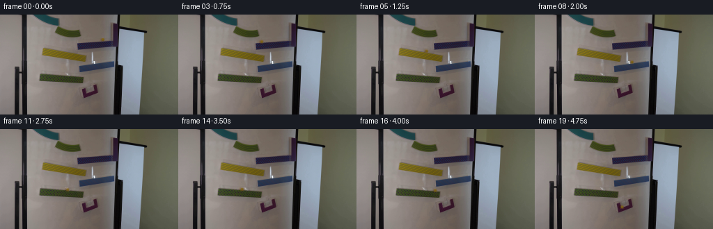
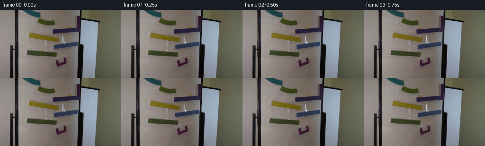

CODING AGENTS AS PIXEL WORLD MODELS
traex/GPT-6.1-Sol · 0106
点击播放 · 原生 RGB 像素
逐轮保存的候选
回放视频、检查图与代码变化。
每份候选均可单独播放。实际图片检查记录在下方工具轨迹中。
候选 01播放与检查图
点击播放 · 原生 RGB 像素


展开代码变化
--- 上一保存版本
+++ 本次保存版本
@@ -0,0 +1,130 @@
+from pathlib import Path
+import numpy as np
+from PIL import Image
+from scipy.ndimage import map_coordinates, gaussian_filter
+import artifact_io
+
+ROOT=Path(__file__).resolve().parent
+FIRST=np.array(Image.open(ROOT/'first_frame.png').convert('RGB'))
+H,W=FIRST.shape[:2]
+
+def clean_background():
+ # Reconstruct the small exposed section of the board under the initial ball,
+ # using edge-aligned samples from adjacent parts of this same ramp.
+ im=FIRST.astype(float)
+ yy,xx=np.mgrid[:H,:W]
+ region=(xx>=129)&(xx<=157)&(yy>=27)&(yy<=31)
+ X=np.stack([np.ones(region.sum()),xx[region],yy[region]],axis=1)
+ coeff=np.linalg.lstsq(X,im[region],rcond=None)[0]
+ ry,rx=np.mgrid[30:40,140:154]
+ accum=np.zeros((*rx.shape,3)); count=np.zeros(rx.shape)
+ for sx in list(range(132,142))+list(range(153,157)):
+ sy=ry-.103*(sx-rx)
+ samp=np.stack([map_coordinates(im[:,:,c],[sy,np.full(rx.shape,sx)],order=1,mode='nearest') for c in range(3)],axis=-1)
+ correction=(rx-sx)[...,None]*coeff[1]+(ry-sy)[...,None]*coeff[2]
+ weight=np.exp(-((sx-rx)/18.)**2)
+ accum+=(samp+correction)*weight[...,None]
+ count+=weight
+ patch=accum/count[...,None]
+ # Preserve the front rail: the moving ball only covers its rear, upper edge.
+ featherx=np.clip(np.minimum(rx-140,153-rx)/2.,0,1)
+ feathery=np.clip(np.minimum((ry-30)/2.,(39-ry)/1.2),0,1)
+ weight=featherx*feathery
+ im[30:40,140:154]=im[30:40,140:154]*(1-weight[...,None])+patch*weight[...,None]
+ return im
+
+BG=clean_background()
+# A compact photographic sprite taken from the initial marble. Its glass tint is
+# represented as an optical colour filter, so it follows the board illumination.
+CX,CY=147.4,35.55
+sy,sx=np.mgrid[30:40,140:154]
+delta=FIRST[30:40,140:154].astype(float)-BG[30:40,140:154]
+# Keep differences belonging to the marble, not residual grain on the board.
+r=np.sqrt(((sx-CX)/1.05)**2+(sy-CY)**2)
+mask=np.clip((5.4-r)/1.7,0,1)
+mask*=np.clip((39-sy)/1.2,0,1)
+delta*=mask[...,None]
+# Clean material from the central photographic sample, opacity inferred from the
+# yellow absorption in the blue channel; surrounding residual is its soft shadow.
+blue_loss=np.clip(-delta[:,:,2],0,None)
+alpha=np.clip(blue_loss/(np.maximum(BG[30:40,140:154,2]-21,20)),0,.98)
+body=(r<3.1)
+alpha*=body
+colour=np.zeros(delta.shape)
+for c in range(3):
+ colour[:,:,c]=np.clip(BG[30:40,140:154,c]+delta[:,:,c]/np.maximum(alpha,.025),0,255)
+shadow=np.minimum(delta,0)*(~body)[...,None]
+
+
+def positions():
+ # Perspective-projected tracks; gravitational acceleration is constant.
+ ramps=[(112.,165.,-.105,39.5),(61.5,123.5,.18,45.3),
+ (113.,165.,-.15,72.),(57.,119.5,.071,84.)]
+ G=1600.;dt=.00025
+ x=CX;y=CY;vx=0.;vy=0.;stage=0;rolling=True
+ sampled=[];nextframe=0
+ delay=.065
+ def surface(s,x):
+ if s<4:
+ lo,hi,m,y0=ramps[s];return y0+m*(x-lo),m
+ return 111.9-.19*(x-125.1)**2,-.38*(x-125.1)
+ for step in range(int(4.76/dt)+1):
+ t=step*dt
+ if t+1e-8>=nextframe*.25 and nextframe<20:
+ sampled.append((x,y,vx,vy,stage,rolling)); nextframe+=1
+ if t<delay:continue
+ if rolling:
+ h,m=surface(stage,x)
+ acceleration=(5/7)*G*m/(1+m*m)
+ if stage==4:
+ acceleration-=18*vx
+ vx+=acceleration*dt;x+=vx*dt
+ y,m=surface(stage,x);vy=m*vx
+ if stage<4:
+ lo,hi,_,_=ramps[stage]
+ if x<lo or x>hi:
+ rolling=False;stage+=1
+ else:
+ vy+=G*dt;x+=vx*dt;y+=vy*dt
+ h,m=surface(stage,x)
+ inrange=(ramps[stage][0]<x<ramps[stage][1]) if stage<4 else (121<x<137)
+ if inrange and y>=h and vy-m*vx>0:
+ y=h;vx=(vx+m*vy)/(1+m*m)*(.58 if stage<4 else .35);vy=m*vx;rolling=True
+ return sampled
+
+
+def render_marble(x,y,vx,vy,stage):
+ image=BG.copy()
+ # Subpixel translation of the photographic marble and its soft contact shadow.
+ yy,xx=np.mgrid[:H,:W]
+ sample_x=xx-x+CX-140
+ sample_y=yy-y+CY-30
+ opacity=map_coordinates(alpha,[sample_y,sample_x],order=1,mode='constant',cval=0)
+ for c in range(3):
+ shade=map_coordinates(shadow[:,:,c],[sample_y,sample_x],order=1,mode='constant',cval=0)
+ pigment=map_coordinates(colour[:,:,c],[sample_y,sample_x],order=1,mode='constant',cval=0)
+ image[:,:,c]=image[:,:,c]+shade
+ image[:,:,c]=image[:,:,c]*(1-opacity)+pigment*opacity
+ return np.clip(np.rint(image),0,255).astype(np.uint8)
+
+
+def main():
+ states=positions()
+ frames=[FIRST.copy()]
+ for x,y,vx,vy,stage,rolling in states[1:]:
+ # A short exposure maintains the glass sphere's compact silhouette while
+ # giving fast drops a slight directional softness, not a drawn trajectory.
+ exposure=.007
+ if stage==4:exposure=.003
+ shots=[]
+ for d in [-.5,0,.5]:
+ shots.append(render_marble(x+vx*exposure*d,y+vy*exposure*d,vx,vy,stage).astype(float))
+ frames.append(np.clip(np.rint(np.mean(shots,axis=0)),0,255).astype(np.uint8))
+ frames=np.array(frames,dtype=np.uint8)
+ artifact_io.save(frames,ROOT)
+ (ROOT/'.tmp').mkdir(exist_ok=True)
+ Image.fromarray(np.clip(BG,0,255).astype(np.uint8)).save(ROOT/'.tmp'/'background.png')
+ np.save(ROOT/'.tmp'/'candidate.npy',frames)
+ for i,s in enumerate(states):print(i,tuple(round(v,2) if isinstance(v,float) else v for v in s))
+
+if __name__=='__main__':main()
可观测工具轨迹
实际执行的命令与返回图片。
命令 1exit 0
/bin/bash -lc 'ls -la && cat prompt.txt && cat GENERATION_RULES.md'
命令 2exit 0
/bin/bash -lc "cat artifact_io.py && python - <<'PY'
from PIL import Image
import numpy as np
im=np.array(Image.open('first_frame.png').convert('RGB'));print(im.shape)
# ascii grid luminance/chroma
im2=np.array(Image.fromarray(im).resize((128,72)))
for row in im2:
s=''
for r,g,b in row.astype(float):
if r>g*1.15 and r>b*1.15 and r>75:c='R'
elif g>r*1.12 and g>b*1.12 and g>65:c='G'
elif b>r*1.15 and b>g*1.1:c='B'
elif r>110 and g>95 and b<g*.65:c='Y'
else:c=' .:-=+*#%@'[min(9,int((255-(r+g+b)/3)*10/256))]
s+=c
print(s)
PY"命令 3exit 0
/bin/bash -lc "python - <<'PY'
from PIL import Image
import numpy as np
im=np.array(Image.open('first_frame.png'))
print('range',im.min((0,1)),im.max((0,1)))
for y in [5,10,15,20,22,24,26,28,30,35,40,44,47,50,52,54,56,60,64,68,72,76,80,84,88,92,96,100,104,110,114,118,122,130,140]:
print(y,[(x,tuple(im[y,x])) for x in [40,50,55,60,70,78,80,84,90,100,110,120,130,140,150,160,170]])
# pixels with yellow
r,g,b=im.astype(float).transpose(2,0,1)
m=(r>g*1.00)&(g>b*1.7)&(g>65)&(r>100)
from scipy.ndimage import label,find_objects
lab,n=label(m)
for i,s in enumerate(find_objects(lab),1):
if s is not None and (lab[s]==i).sum()>2:
a=(lab[s]==i).sum();print('yellow',a,s)
PY"命令 4exit 0
/bin/bash -lc "python - <<'PY'
from PIL import Image
import numpy as np
im=np.array(Image.open('first_frame.png')).astype(float)
chars=' .,:;i1tfLCG08@'
for region in [(65,122,12,38),(35,90,0,20),(138,156,27,41),(54,128,44,70),(110,144,98,124)]:
x0,x1,y0,y1=region
print('REGION',region,'LUMINANCE')
for y in range(y0,y1):
print(f'{y:3d} ',''.join(chars[min(len(chars)-1,int(np.mean(im[y,x]) / 255*len(chars)))] for x in range(x0,x1)))
print('COLOR dominant (w=board t=teal g=green y=yellow r=red b=blue k=dark)')
for y in range(y0,y1):
row=''
for x in range(x0,x1):
r,g,b=im[y,x]
if r+g+b<55:c='k'
elif g>r+8 and b>r+8:c='t'
elif g>r+2 and g>b*1.35:c='g'
elif r>g*1.15 and r>b*1.30 and b>g*.45:c='r'
elif g>b*1.6 and r>g:c='y'
elif b>r*1.15 and b>g*1.1:c='b'
elif r+g+b<260:c='d'
else:c='.'
row+=c
print(f'{y:3d} ',row)
print('top ramp rgb:')
for y in range(17,28):
print(y,[(x,tuple(im[y,x].astype(int))) for x in range(78,96)])
PY"命令 5exit 0
/bin/bash -lc "python - <<'PY'
import numpy as np
from PIL import Image
im=np.array(Image.open('first_frame.png'))
for y in range(31,41):
print('y',y,' '.join(f'{x}:{tuple(im[y,x])}' for x in range(142,153)))
# global strongest chroma location color groups
from scipy.ndimage import label,find_objects
r,g,b=im.astype(float).transpose(2,0,1)
for desc,mask in [('red',(r>g*1.2)&(r>b*1.2)&(r>35)),('bright yellow',(r>140)&(g>100)&(b<g*.7)),('green',(g>r*1.08)&(g>b*1.3))]:
lab,n=label(mask)
print(desc)
for i,s in enumerate(find_objects(lab),1):
if s is not None and (lab[s]==i).sum()>3:print((lab[s]==i).sum(),s)
PY"命令 6exit 0
/bin/bash -lc "python - <<'PY'
import numpy as np
from PIL import Image
im=np.array(Image.open('first_frame.png')).astype(float)
r,g,b=im.transpose(2,0,1)
for name,xr,yr,mask in [
('purple',(110,168),(34,49),(b>r*1.05)&(b>g*1.1)),
('yellow',(60,125),(46,68),(g>b*1.5)&(r>g)),
('blue',(112,169),(64,86),(b>r*1.15)&(b>g*1.1)),
('green',(56,123),(83,100),(g>b*1.3)&(g>r*1.05)),
('red',(116,142),(98,121),(r>g*1.15)&(r>b*1.15))]:
print(name)
for x in range(*xr,3):
ys=np.where(mask[yr[0]:yr[1],x])[0]+yr[0]
print(x,(ys.min(),ys.max()) if len(ys) else None,end='; ')
print()
PY"命令 7exit 0
/bin/bash -lc "python - <<'PY'
import numpy as np
from PIL import Image
im=np.array(Image.open('first_frame.png'))
for y in range(30,40):
print(y,[(x,im[y,x].tolist()) for x in [137,140,141,142,143,144,145,150,151,152,153,154,155,156,157]])
PY"命令 8exit 0
/bin/bash -lc "cat > .tmp/sim.py <<'PY'
import math
G=2000.
ramps=[(112.,165.,-.105,39.5),(61.5,123.5,.18,45.3),(113.,165.,-.15,72.),(57.,119.5,.071,84.)]
def height(i,x):
lo,hi,m,y0=ramps[i];return y0+m*(x-lo)
x=147.45;y=35.78;vx=0.;vy=0.; stage=0; rolling=True;dt=.0005
for step in range(10001):
t=step*dt
if step%500==0:print(round(t,2),stage,'roll' if rolling else 'fall',round(x,2),round(y,2),round(vx,2),round(vy,2))
if stage==4:break
if rolling:
lo,hi,m,y0=ramps[stage];a=(5/7)*G*m/(1+m*m)
vx+=a*dt;x+=vx*dt;y=height(stage,x);vy=m*vx
if x<lo or x>hi:
print('leave',round(t,3),stage,x,y,vx,vy)
rolling=False;stage+=1
else:
oldx=x;oldy=y;vx0=vx;vy+=G*dt;x+=vx*dt;y+=vy*dt
if stage<4:
lo,hi,m,y0=ramps[stage]
if lo<x<hi and y>=height(stage,x) and vy-m*vx>0:
y=height(stage,x);vx=(vx+m*vy)/(1+m*m)*.94;vy=vx*m;rolling=True
print('land',round(t,3),stage,x,y,vx,vy)
PY
python .tmp/sim.py"命令 9exit 0
/bin/bash -lc "sed \"s/\\*\\.94/\\*.58/\" .tmp/sim.py > .tmp/sim2.py && python .tmp/sim2.py"
命令 10exit 0
/bin/bash -lc "sed -e 's/G=2000./G=1500./' -e 's/\\*\\.94/\\*.58/' .tmp/sim.py > .tmp/sim3.py && python .tmp/sim3.py"
命令 11exit 0
/bin/bash -lc "python - <<'PY'
import cv2, scipy, numpy as np
print('cv2',cv2.__version__)
from PIL import Image
im=np.array(Image.open('first_frame.png')).astype(float)
# background local gaussian? reconstruct texture from shifted nearby board
m=np.zeros(im.shape[:2],np.uint8)
m[33:38,143:151]=255;m[32,145:150]=255
bg=cv2.inpaint(im.astype(np.uint8),m,3,cv2.INPAINT_TELEA)
for y in range(32,39):
print(y,[(x,bg[y,x].tolist()) for x in range(142,152)])
Image.fromarray(bg).save('.tmp/background.png')
PY"命令 12exit 0
/bin/bash -lc "cat > generate.py <<'PY'
from pathlib import Path
import numpy as np
from PIL import Image
from scipy.ndimage import map_coordinates, gaussian_filter
import artifact_io
ROOT=Path(__file__).resolve().parent
FIRST=np.array(Image.open(ROOT/'first_frame.png').convert('RGB'))
H,W=FIRST.shape[:2]
def clean_background():
# Reconstruct the small exposed section of the board under the initial ball,
# using edge-aligned samples from adjacent parts of this same ramp.
im=FIRST.astype(float)
yy,xx=np.mgrid[:H,:W]
region=(xx>=129)&(xx<=157)&(yy>=27)&(yy<=31)
X=np.stack([np.ones(region.sum()),xx[region],yy[region]],axis=1)
coeff=np.linalg.lstsq(X,im[region],rcond=None)[0]
ry,rx=np.mgrid[30:40,140:154]
accum=np.zeros((*rx.shape,3)); count=np.zeros(rx.shape)
for sx in list(range(132,142))+list(range(153,157)):
sy=ry-.103*(sx-rx)
samp=np.stack([map_coordinates(im[:,:,c],[sy,np.full(rx.shape,sx)],order=1,mode='nearest') for c in range(3)],axis=-1)
correction=(rx-sx)[...,None]*coeff[1]+(ry-sy)[...,None]*coeff[2]
weight=np.exp(-((sx-rx)/18.)**2)
accum+=(samp+correction)*weight[...,None]
count+=weight
patch=accum/count[...,None]
# Preserve the front rail: the moving ball only covers its rear, upper edge.
featherx=np.clip(np.minimum(rx-140,153-rx)/2.,0,1)
feathery=np.clip(np.minimum((ry-30)/2.,(39-ry)/1.2),0,1)
weight=featherx*feathery
im[30:40,140:154]=im[30:40,140:154]*(1-weight[...,None])+patch*weight[...,None]
return im
BG=clean_background()
# A compact photographic sprite taken from the initial marble. Its glass tint is
# represented as an optical colour filter, so it follows the board illumination.
CX,CY=147.4,35.55
sy,sx=np.mgrid[30:40,140:154]
delta=FIRST[30:40,140:154].astype(float)-BG[30:40,140:154]
# Keep differences belonging to the marble, not residual grain on the board.
r=np.sqrt(((sx-CX)/1.05)**2+(sy-CY)**2)
mask=np.clip((5.4-r)/1.7,0,1)
mask*=np.clip((39-sy)/1.2,0,1)
delta*=mask[...,None]
# Clean material from the central photographic sample, opacity inferred from the
# yellow absorption in the blue channel; surrounding residual is its soft shadow.
blue_loss=np.clip(-delta[:,:,2],0,None)
alpha=np.clip(blue_loss/(np.maximum(BG[30:40,140:154,2]-21,20)),0,.98)
body=(r<3.1)
alpha*=body
colour=np.zeros(delta.shape)
for c in range(3):
colour[:,:,c]=np.clip(BG[30:40,140:154,c]+delta[:,:,c]/np.maximum(alpha,.025),0,255)
shadow=np.minimum(delta,0)*(~body)[...,None]
def positions():
# Perspective-projected tracks; gravitational acceleration is constant.
ramps=[(112.,165.,-.105,39.5),(61.5,123.5,.18,45.3),
(113.,165.,-.15,72.),(57.,119.5,.071,84.)]
G=1600.;dt=.00025
x=CX;y=CY;vx=0.;vy=0.;stage=0;rolling=True
sampled=[];nextframe=0
delay=.065
def surface(s,x):
if s<4:
lo,hi,m,y0=ramps[s];return y0+m*(x-lo),m
return 111.9-.19*(x-125.1)**2,-.38*(x-125.1)
for step in range(int(4.76/dt)+1):
t=step*dt
if t+1e-8>=nextframe*.25 and nextframe<20:
sampled.append((x,y,vx,vy,stage,rolling)); nextframe+=1
if t<delay:continue
if rolling:
h,m=surface(stage,x)
acceleration=(5/7)*G*m/(1+m*m)
if stage==4:
acceleration-=18*vx
vx+=acceleration*dt;x+=vx*dt
y,m=surface(stage,x);vy=m*vx
if stage<4:
lo,hi,_,_=ramps[stage]
if x<lo or x>hi:
rolling=False;stage+=1
else:
vy+=G*dt;x+=vx*dt;y+=vy*dt
h,m=surface(stage,x)
inrange=(ramps[stage][0]<x<ramps[stage][1]) if stage<4 else (121<x<137)
if inrange and y>=h and vy-m*vx>0:
y=h;vx=(vx+m*vy)/(1+m*m)*(.58 if stage<4 else .35);vy=m*vx;rolling=True
return sampled
def render_marble(x,y,vx,vy,stage):
image=BG.copy()
# Subpixel translation of the photographic marble and its soft contact shadow.
yy,xx=np.mgrid[:H,:W]
sample_x=xx-x+CX-140
sample_y=yy-y+CY-30
opacity=map_coordinates(alpha,[sample_y,sample_x],order=1,mode='constant',cval=0)
for c in range(3):
shade=map_coordinates(shadow[:,:,c],[sample_y,sample_x],order=1,mode='constant',cval=0)
pigment=map_coordinates(colour[:,:,c],[sample_y,sample_x],order=1,mode='constant',cval=0)
image[:,:,c]=image[:,:,c]+shade
image[:,:,c]=image[:,:,c]*(1-opacity)+pigment*opacity
return np.clip(np.rint(image),0,255).astype(np.uint8)
def main():
states=positions()
frames=[FIRST.copy()]
for x,y,vx,vy,stage,rolling in states[1:]:
# A short exposure maintains the glass sphere's compact silhouette while
# giving fast drops a slight directional softness, not a drawn trajectory.
exposure=.007
if stage==4:exposure=.003
shots=[]
for d in [-.5,0,.5]:
shots.append(render_marble(x+vx*exposure*d,y+vy*exposure*d,vx,vy,stage).astype(float))
frames.append(np.clip(np.rint(np.mean(shots,axis=0)),0,255).astype(np.uint8))
frames=np.array(frames,dtype=np.uint8)
artifact_io.save(frames,ROOT)
(ROOT/'.tmp').mkdir(exist_ok=True)
Image.fromarray(np.clip(BG,0,255).astype(np.uint8)).save(ROOT/'.tmp'/'background.png')
np.save(ROOT/'.tmp'/'candidate.npy',frames)
for i,s in enumerate(states):print(i,tuple(round(v,2) if isinstance(v,float) else v for v in s))
if __name__=='__main__':main()
PY
python generate.py"命令 13exit 0
/bin/bash -lc "python - <<'PY'
import generate as g
import numpy as np
print('BG patch')
for y in range(32,40):
print(y,[g.BG[y,x].round().astype(int).tolist() for x in range(143,152)])
print('ALPHA')
print(g.alpha.round(2))
print('central colours')
for y in range(3,8):print(y+30,g.colour[y,5:11].round().astype(int))
a=g.render_marble(g.CX,g.CY,0,0,0)
d=np.abs(a.astype(int)-g.FIRST.astype(int));print('re-render identical start error',d.max(),d.sum(),(d.sum(2)>10).sum())
print('yellow center each frame')
frames=np.load('.tmp/candidate.npy')
for i,state in enumerate(g.positions()):
x,y=state[:2]; print(i, 'pos',round(x,2),round(y,2),'pix',frames[i,int(y),int(x)].tolist(),'area',(np.abs(frames[i].astype(int)-g.BG.astype(int)).sum(2)>30).sum())
PY"命令 14exit 0
/bin/bash -lc "python - <<'PY'
import numpy as np
from PIL import Image
from pathlib import Path
f=np.load('.tmp/candidate.npy')
assert f.shape==(20,144,256,3) and f.dtype==np.uint8
assert np.array_equal(f[0],np.array(Image.open('first_frame.png').convert('RGB')))
p=np.load('pixels.npz')['pixels'];assert p.shape==(144,256,20)
print('Verified: 20 uint8 RGB frames, 256Ã144, exact first frame.')
print('Saved:', ', '.join(x for x in ['generate.py','pixels.npz','index.html','frames'] if Path(x).exists()))
PY"保存候选 1 份；完成命令 14 次；可验证图片返回 0 张。原始 API 响应与完整日志保留在本地。